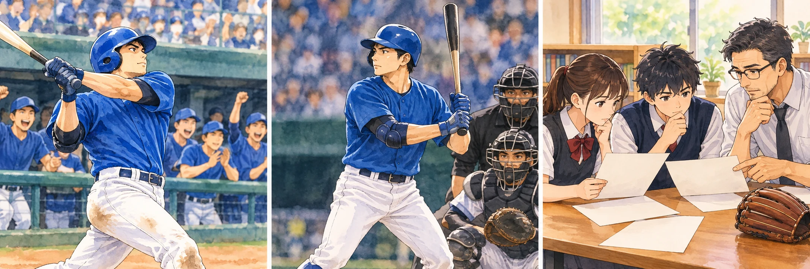

來源AI延伸練習
完整原題
作答所需文章／材料
在2026年世界棒球經典賽（WBC）C組預賽的關鍵戰中，南韓隊以7：2擊敗澳洲隊。此役的主角為南韓重砲文保景，他單場貢獻3安打、4分打點，包括二局上的兩分砲，助隊一路領先。 然而，賽後爭議聚焦於九局上，當時南韓以7：2領先，滿足了「領先5分以上且失分不超過2分」的晉級條件。在一、三壘有人的得分良機下，文保景卻站著不動，看著好球進壘遭三振，將比分定格在7：2。最終南韓順利拿下八強門票。 此舉引發了臺灣球迷的強烈憤怒，原因在於臺灣隊的晉級命運與此戰比分掛鉤。若南韓得分達8分以上、澳洲得3分以上，臺灣才能靠失分率優勢晉級。文保景的「消極進攻」被部分球迷解讀為刻意「控分」以排除臺灣，導致其個人社群與維基百科遭到憤怒留言洗版。 針對文保景的行為，各方評論不一。部分媒體與球迷認為南韓精於計算，選擇讓比分鎖在7：2以確保晉級，同時不讓第三方（臺灣）漁翁得利。也有專業分析指出，對南韓而言，7分與100分的意義相同，重點在於維持5分差。繼續進攻會拉長局數，導致準備多時的投手群「手感冷掉」，增加九局下被追分的風險，因此趕緊結束進攻是保護晉級機會的直觀選擇。也有聲音呼籲臺灣球迷保持理性，強調南韓並無義務幫臺灣打球。臺灣連續兩屆因首戰失利而處於被動，其晉級結果主要與自身表現有關，並非他國球員的戰術選擇所致。 總結而言，文保景的舉動雖讓臺灣隊止步預賽，但也反映出國際賽中「掌握主動權」的重要性，以及多方互咬局勢下殘酷的晉級邏輯。先想一想，再查看答案、解說與原圖
逐項解析
| 選項與原句 | 判讀 | 句意與判斷理由 |
|---|---|---|
| (A) 南韓隊的戰術操作完全是為了阻斷臺灣隊晉級，展現高超的心戰技巧 | 不選 | 完全為阻斷臺灣是單一動機推斷，不是文中所指專業分析。 |
| (B) 文保景單場繳出3安打與4分打點，消極進攻純屬個人的職業道德瑕疵 | 不選 | 純屬道德瑕疵是價值指責，未回應文中的戰術風險分析。 |
| (C) 在已達晉級安全線的情況下，速戰速決結束半局有助於降低防守端的變數 | 應選 | 對應文中避免等待太久、降低下半局風險的說法。 |
| (D) 臺灣隊之所以無法晉級，主要責任在於南韓打者未全力以赴運動家精神 | 不選 | 把責任全歸他隊，與文中呼籲關注自身表現不同。 |
詳細說明與解題步驟
題目不是請你認定球員內心，而是辨認文章整理的哪一類觀點。C以自身晉級風險解釋行為，最符合第四段所列分析。即使稱為專業分析，也仍是作者所呈現的看法，不能當作已證實的打席命令。
原AI把「對戰優質率TQB」與這次賽制的失分比率混用，已訂正：此處相關排名比較為同戰績球隊對戰的失分除以防守出局數，不能直接換成得失分差或TQB。原文條件仍照卷保留，閱讀題據本文選答；不能把「兩隊各達8、3分」抽離戰績與出局數，當作任何比賽都適用的晉級公式。
文中「控分排除臺灣」屬部分球迷的解讀，「手感冷掉」則是文中提出的戰術分析。不能把兩者當成已證實的球員內心動機或必然生理結果；解讀為已熱身投手等待太久可能影響節奏即可，不照抄原AI無根據的神經反射、腎上腺素等推論。
核對：[WBC官方2026賽事規則](https://www.mlb.com/amp/news/world-baseball-classic-rules-rule-modifications-2026.html)；[官方賽況](https://www.mlb.com/stories/game/788112)。

① 表現資料，不等於道德判決
文章先列打者全場貢獻，再提出末段爭議。B把行為歸為純粹道德瑕疵，是價值指責，不是文中所列的風險分析。
② 末段爭議，不能直接推內心
「控分排除臺灣」是部分媒體與球迷的解讀。A說完全為了阻斷臺灣，D把責任歸他隊，都超出文中專業分析的角度。
③ C著眼自身晉級風險
文中分析是在已達安全線時，盡快結束進攻，可能降低下半局防守變數。這是在辨認作者整理的觀點，不是證明球員收到相同指令。
④ 分辨各方看法，不替球員斷定動機
答案 C：降低自身防守端變數
- C以自身晉級風險作解釋，對應文中分析。
- A猜單一動機，B作道德指責，D歸責他隊。
- 本文的分析看法，不等於已證實的內心動機。
核對註記：依對話完整題幹與全部選項保存；必要材料取真正原卷或可核對原典，答案獨立核對，非原卷另題。
原圖（僅本題）
此題無附圖。